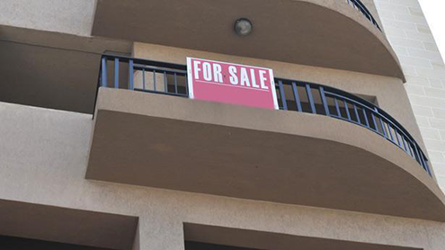

Notícias Nacionais de Malta
quinta-feira, 1 de junho de 2017, 11 : 39
Os preços das propriedades aumentaram 4,8% no primeiro trimestre
Menor percentual de vendas na região de Cottonera
Os preços dos imóveis aumentaram em média 4,8 por cento no primeiro trimestre deste ano quando comparado ao trimestre correspondente do ano passado, disse hoje o Escritório Nacional de Estatística.
O volume de transações cresceu 11,1 por cento.
A NSO disse que no ano passado, 75,6 por cento das propriedades vendidas eram apartamentos, seguido pelo duplex com 20 por cento e das casas geminadas com 4,4 por cento. Esse padrão foi consistente com os anos anteriores.
O índice de preços do duplex aumentou 9,6 por cento em relação ao mesmo período do ano passado. Os preços dos apartamentos aumentaram 4,2 por cento.
A maior porcentagem de vendas de imóveis foi na região de Birkirkara, Gżira, Msida, Ta 'Xbiex, San Ġwann (13%), seguida de Żabbar, Xgħajra, Żejtun, Birżebbuġa, Marsaskala, Marsaxlokk (12,3%) e Pembroke, St Julian's, Tas -Sliema, Swieqi, Għargħur (11,4%).
O menor percentual de vendas foi na região de Cottonera com apenas 2,6%.